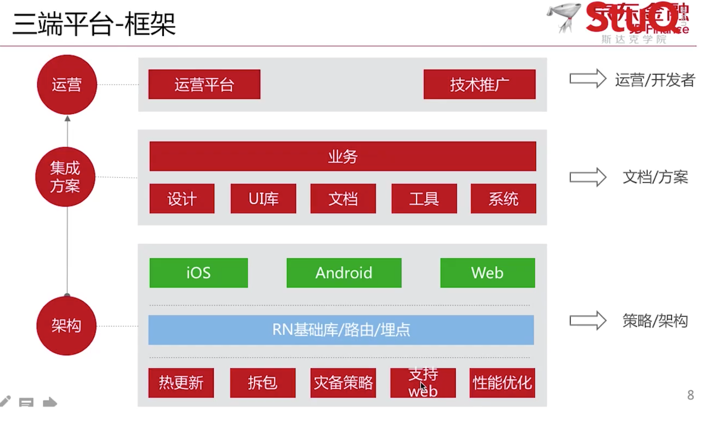
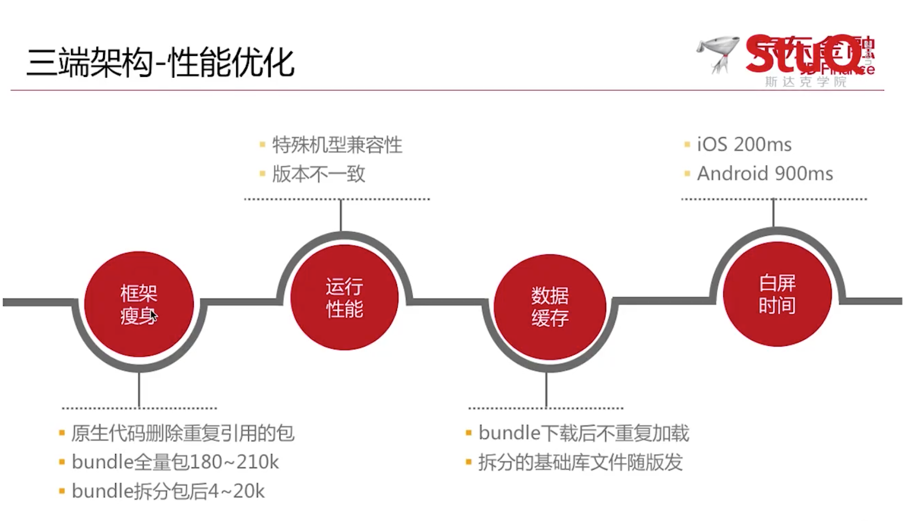
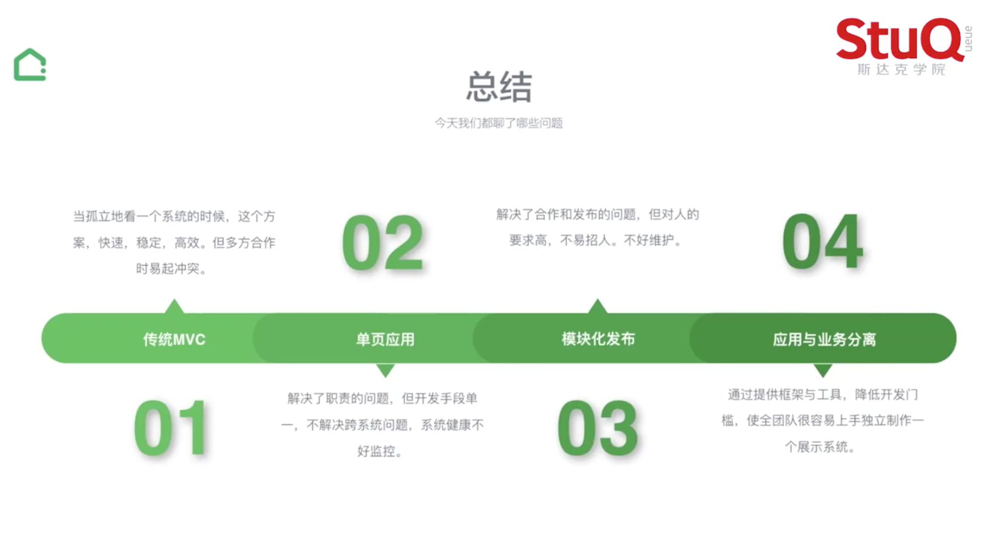

构建大型应用
分享人：孟红伦(钉钉)
重要的俩块
- 使用
TypeScript解决代码复杂,数据模型的问题 - 使用
RxJS更好的解决异步带来的问题
代码如何复杂
- 上百个 RPC 接口
- 几十种消息推送
- 10W + 行代码
- 模块依赖关系复杂
- 数据模型复杂
钉钉犯过的错
- 开发时没有考虑到个人用户登录时的 ‘org’ 字段
- 因为开发环境中是
归属某个企业的,忽视了对不归属任何企业的个人用户的测试 - 最后还是用户主动反映了这个问题
- 问题责任:测试的锅
什么是 Typescript
- 它是 JS 的超集,兼容 ES5,ES2015/16/17.
- 它的编译结果是 JS , 可以运行在浏览器/Node 端.
- 它支持 TS 和 JS 混用
主流框架支持程度
- Angular 2.0
完全支持 - VUE 2.0
部分支持- 模板中还不具备 Type Check 的能力
- React
完全支持- jsx 不是 ‘模板’而是 js,所以 Type Check 支持的很好
异步逻辑的处理
RxJS实现渐进式搜索- 使用 Rx.js Observable 可以更好更直观的描述这些 API,帮助你在错综复杂的异步 API 调用中少犯错
项目中如何选择框架和库
分享人：张克军(豆瓣)
特指公司规模比较大,协作开发的人数比较多,商业型项目
商业型项目的核心
- 注重以结果为导向
- 高效率高质量的产出产品
考虑方面
- 迭代周期长,方案的选择就要
长期有效性 - 代码可维护性
- 伸缩性,用比较小的成本应对可能随时变更的需求
- 方案的选择需要更务实
基本前提
- 成本和效率
- 实现目标的成本和效率
- 团队协作的成本和效率
- 后续迭代的成本和效率
选择库时经常谈到的关键词
- 模式,普及率,成熟度
- 体量,局限性,学习成本
- 性能,活跃度,周边资源
- 前景,契合度,文档质量
选择的原则
- 妥适性原则(避免过度实现)
- 库的选择:
- 缩小依赖范围和向稳定方向依赖
- 避重趋轻、避繁逐简、以简驭繁、避虚就实
- 可替代性
- 主框架的选择
- 没有不二法则
- 拥抱未来
- 经验价值高
- 架构上的优势为重
选择的原则(白话版)
- 妥适性原则(避免过度实现)
- 库的选择，尽量同时满足以下条件
- 单一性
- 普遍性
- 轻量型
- 依赖少
- 主框架的选择：做足调研和实践，多和老司机交流
- code Review 十分重要
包分析工具
可以分析出项目中库的依赖和自己写得代码的比重
https://www.npmjs.com/package/webpack-bundle-analyzer
RN 跨三端技术实践
分享人：刘威(京东金融)
移动开发常见问题
- 原生开发
门槛高 - 原生发版到上线相对
周期长 - 原生线上问题相对
难修复 - H5 相对原生
体验差
RN 优缺点
- 优点
- 学习
成本低 - 体验
接近原生 - 二端代码
可复用 - 社区活跃
- 学习
- 缺点
- 不支持热更新
- 不支持 h5
- 向下兼容性差
- 低端机型会有崩溃
三端平台-架构

关于热更新
苹果官方停掉热更新之后并不影响RN，因为RN热更新没有更改底层的OC代码
- 缓存机制
- 模块名称
- bundle 文件下载地址
- 文件校验安全码
- 版本号
- 更新机制
- 插件安全码是否一致
大体思路好像是：
- 用户进入 APP
- 默认下载一个某个接口的数据到本地
- 接口中包括模块名称、bundle 文件
下载地址、文件校验安全码、版本号
- 接口中包括模块名称、bundle 文件
- 当用户再一次进入 APP 中的时候会再次下载接口中的数据
- 然后在对比之前的数据是否发生了变化，安全码是否一致
- 如果不一致，就重新下载一遍，以此实现热更新
拆分 bundle
- 底层框架 Bundle
- 基础 RN JS 库
- 三端组件 JS 库
- 业务代码 Bundle
- 纯业务 JS
- 可参考 react-native-split
灾备策略
当在低版本手机点击时出现崩溃备用方案
- 低版本的原生跳 H5
- 原生连续崩溃降级至 H5
如何支持 web 端
- 编译时转译 RN API
- react-native-web
- node-haste-webpack-plugin
版本控制
- 入口配置灵活
- 指定端和版本(可以指定版本打对应的包)
- 指定人群定向(作用主要用于测试)
- 小流量
跳转中心
- 低版本 H5
- 高版本原生
- 全量包 URL
- 拆分包 URL
- App 外输出 H5 页面
性能优化

数据上报

三端平台-集成方案
三端组件
- JS UI 组件
- 为
抹平三端差异化的 API，基于视觉的规范 UI 层 JS 组件 - UIButon、UIExplain、UISwipe…
- 为
- JS 业务组件
- Fetch、Login…
三端工具
- 本地 Nodejs 脚手架
- 本地模拟器-Android
- 本地模拟器-IOS
独立调试IOSAPP- 本地 IDE 客户端
链家网前端工程实践
分享人：杨永林(链家)
都说了什么
